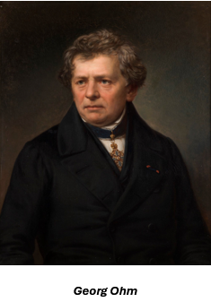

La Ley de Ohm
La Ley de Ohm establece la relación que existe entre la diferencia de potencial entre bornes de una resistencia y la intensidad de corriente que circula por ella, con sentido de mayor a menor potencial, de manera que:

V = I x R
Esta proporción representa la conductancia eléctrica, que es el inverso de la resistencia eléctrica, esta ley se puede aplicar a otros componentes que presenten una impedancia, indicando el grado de oposición al flujo de corriente, de la siguiente manera:
V = I x Z
La ley lleva el nombre del Sr. Georg Ohm, quien la formuló en 1827 a partir de observaciones empíricas, es importante señalar que su aplicación está limitada a ciertos materiales, ya que se ve influenciada por la temperatura y no se conocen con precisión sus límites superior e inferior de uso, aunque se ha demostrado que es válida incluso para cabñes de silicio de solo cuatro átomos de ancho.
Leyes de Kirchhoff
En 1845, Gustav Robert Kirchhoff, con apenas 21 años, formuló las leyes de la electricidad que llevan su nombre, las cuales son ecuaciones fundamentales que rigen los circuitos eléctricos, además de ser un destacado científico, también desarrolló tres leyes de espectroscopía que, por supuesto, también llevan su nombre.
Aunque sus leyes son bastante simples, es notable que crió a cinco hijos solo, ya que su esposa falleció joven, y gran parte de su vida la pasó en silla de ruedas.
Primera Ley de Kirchhoff
Esta ley se deriva del principio de conservación de la carga en los nodos de una red eléctrica, n cualquier nodo de un circuito, donde hay corrientes que entran y salen, y considerando que no puede acumularse carga en un nodo, la corriente total que entra debe ser igual a la corriente total que sale en todo momento.
En el nodo de la figura se cumplirá que
i1 + i3 + i5 = i2 + i4, o lo que es lo mismo
i1 + i2 + i3 + i4 + i5 = 0, es decir:
que en cualquier instante de tiempo, la suma algebraica de todas las corrientes que entran en un nudo es igual a cero.
Segunda Ley de Kirchhoff
Esta ley se deriva de aplicar el principio de conservación de la energía a los lazos o circuitos de un sistema eléctrico.
En la figura se ilustra un camino cerrado dentro de la red. Imaginemos una carga q = + 1Cq = + 1C situada en el nodo A, que se desplaza en la dirección indicada, pasando del nodo A al B, del B al C, y así sucesivamente hasta regresar al nodo de origen A.
Se ha indicado la polaridad de las tensiones. La energía que la carga gana al completar este recorrido cerrado será igual a la energía que pierde. Dado que las subidas de tensión representan ganancias de energía y las bajadas representan pérdidas, la energía ganada por la carga será igual a:
v 1 (t) + v 2 (t) + v 5 (t)
y una energía gastada de valor
v 3 (t) + v 4 (t)
y, en consecuencia se cumplirá que
v 1 (t) + v 2 (t) + v 5 (t) = v 3 (t) + v 4 (t)
o de otro modo
v 1 (t) + v 2 (t) + v 5 (t) - v3 (t) - v 4 (t) = 0
es decir: en cualquier instante de tiempo, la suma algebraica de todas las tensiones a lo largo de un camino cerrado es igual a cero
Sv (t) = 0.
(Ley De Ohm Y Leyes De Kirchhoff, 2013)